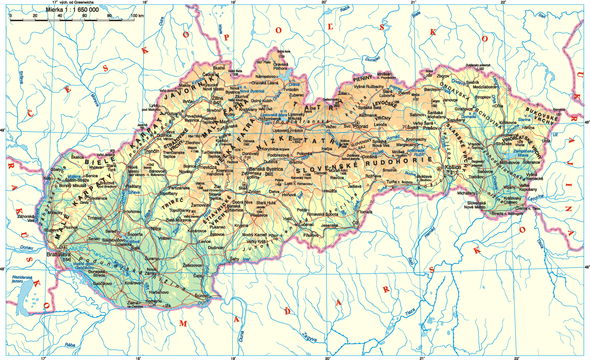

Ubytovacie zariadenie Centrum Apartman LEYLA sa nachádza v Bardejove 10 km od Kostola sv. Františka z Assisi v obci Hervartovo a 35 km od Duklianskeho bojiska. V jeho okolí sa hostia môžu venovať pešej turistike. Tento Apartmán s výhľadom do záhrady a na mesto je vybavený bezplatným Wi-Fi.
Apartmán má 3 spálne, vybavenú kuchyňu s umývačkou riadu a mikrovlnnou rúrou a 1 kúpeľňu s bidetom. K vybaveniu patrí káblová TV s plochou obrazovkou a práčka. K dispozícii sú aj uteráky a posteľná bielizeň.
Národný park Magura je od apartmánu vzdialený 41 km. Medzinárodné letisko Košice, ktoré je k ubytovaniu Centrum Apartman LEYLA najbližšie, sa nachádza vo vzdialenosti 90 km. Za príplatok ponúka ubytovacie zariadenie letiskový transfer.
Najobľúbenejšie vybavenie
Bezplatné parkovisko
Bezplatné Wi-Fi
Nefajčiarske izby
Letiskový transfer

Stredný Image
Pravý Image
